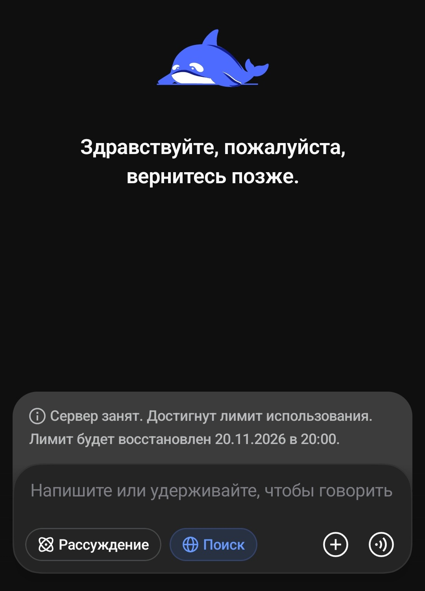
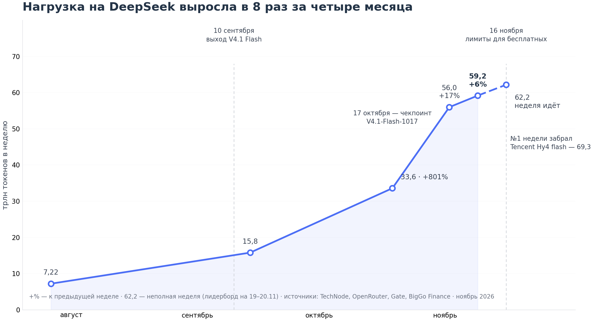

Лимиты DeepSeek для бесплатных: что ограничили, откуда 8,6-кратный рост и что делать

Лимиты DeepSeek для бесплатных: не больше 40 000 знаков на сообщение, старые диалоги закрываются через семь дней, дневная квота не раскрыта. За четыре месяца недельная нагрузка выросла с 7,22 до 62,2 трлн токенов, и компания ответила тихим ограничением. Разбираю, что именно порезали, откуда взялся рост, три версии перегрузки и что делать, когда deepseek не работает.
Утро, когда DeepSeek включил лимит
Утро начинается с дороги на работу. В вагоне я открываю DeepSeek — бесплатную нейросеть, в которой с прошлого вечера лежит контекст: куски текста, который мы разбирали, десятки уточнений, готовый задел. Загружаю свежий фрагмент и задаю простой вопрос: ну что скажешь на эту тему? Интерфейс знакомый до мелочей, и ничего не предвещает сюрприза.
Мигают точечки — модель думает. Через пару секунд вместо ответа выскакивает сообщение: «Сервер занят. Достигнут лимит использования». Я протираю глаза: первая мысль — сеть. Перезагружаю чат, проверяю соединение, пробую снова. Сообщение не пропадает. И тут до меня доходит: похоже, приплыли. Система, которая ещё вчера отвечала за секунду, теперь просто отказывалась работать.
Не скрою: обидно было не за само сообщение, а за то, что в этом чате осталась половина работы.
Почему DeepSeek это сделал: кончилась мощность
Короткий ответ: у модели DeepSeek кончилась мощность. За это время недельный объём вырос с 7,22 до 62,2 трлн токенов — в 8,6 раза, — а железо за это время не выросло ни в какую кратность. Если честно, восемь раз за четыре месяца — это скорость не продукта, а эпидемии. Серверы не масштабируются так же быстро, как растут запросы, и в какой-то момент компания оказалась перед выбором: пускать всех и падать или кого-то притормозить.
Притормозили бесплатных. Ограничения ввели молча, без анонса — поэтому утром вместо ответа появилось уведомление, а не объяснение. Что именно порезали, откуда взялся рост и почему это случилось не в июле, а в ноябре, — дальше по порядку.
Лимиты DeepSeek для бесплатных: что именно ограничили
Пользователи начали массово сообщать о проблемах вечером 14-го и в течение следующего дня, а 16-го об этом написали китайские СМИ — в первой публикации ITHome ограничения упоминались как «вчерашние». Так что дата у всех разная: для кого-то лимиты начались в пятницу вечером, для кого-то — в субботу утром.
Причина в уведомлении названа прямо: нехватка вычислительных мощностей. Другого объяснения у лимитов DeepSeek нет, и это, пожалуй, самое честное, что было во всей истории. Под раздачу, как ни странно, попали сайт и приложение — то есть всё, чем пользуется обычный человек; API-контур разработчиков она обошла стороной. Ввели ограничения молча: ни пресс-релиза, ни записи в блоге, ни единого набора правил. Сроков снятия компания не назвала до сих пор, и это важная деталь: временную меру можно переждать, а новое правило — только принять. Разговоров о лимитах DeepSeek с тех пор меньше не стало: с лимитами DeepSeek столкнулись миллионы.
Лимиты DeepSeek для бесплатных — ровно три пункта, и каждый бьёт по своему сценарию работы.
- Длинные диалоги. Переписку, которую не открывали больше семи дней, продолжить нельзя. Часть пользователей получила уведомление о пороге в 72 часа — это наблюдение, а не заявленное правило, но направление то же: старые чаты перестают быть рабочим инструментом и превращаются в архив.
- Длина ввода. Одно сообщение — примерно до 40 000 знаков. Для коротких вопросов это незаметно, для документа, договора или куска кода — заметно сразу: текст приходится резать на части, а контекст держать в голове самому. С длинным договором или логом это особенно неприятно: файл приходится резать вручную.
- Дневная квота. У кого-то она тает меньше чем за два часа — и назавтра всё повторяется. Размер её не раскрыт, время сброса индивидуально для аккаунта, и именно эта часть ограничений раздражает сильнее всего, потому что предсказать её нельзя.
API не тронули — тронули обычных пользователей. DeepSeek API остался прежним: для разработчиков всё по-прежнему — свои лимиты, оплата по токенам, стабильность зависит от бюджета, а не от дневной квоты. Поэтому в поиске про сбой дипсика всё чаще всплывает не чат, а API DeepSeek: у разработчиков свой счёт и своя квота, и их лимиты измеряются деньгами, а не часами ожидания. По-моему, это самое честное решение из всей истории: кто платит, тот получает предсказуемость.
Разница принципиальная: платный контур живёт по своим правилам, а бесплатный — по квоте. Нейросеть DeepSeek только что превратилась из «самого щедрого бесплатного ИИ» в продукт с поводком — при том, что платить за него по-прежнему негде.
Деталь, от которой и смешно, и грустно: 13 ноября компания открыла через API модели DeepSeek возможности своего приложения — веб-поиск с цитатами, чтение URL, ввод файлов, OCR, распознавание речи, синтез. Демо-чат выложили под лицензией MIT, то есть в виде готовой библиотеки для собственных сборок. Ставка на разработчиков сделана явно: каждая функция из списка уехала в API. А платного тарифа, чтобы оплатить тот же чат и не упираться в квоту, у обычных людей до сих пор нет.
Получается парадокс: бесплатно работать стало нельзя, а за деньги — пока не за что. И этот парадокс объясняет, почему следующая часть статьи вообще нужна: чтобы понять, откуда взялась нехватка мощностей, придётся вспомнить, как компания к ней пришла.
Досье: компания, которая обрушила Уолл-стрит
DeepSeek — китайский ИИ-стартап из Ханчжоу, зарегистрированный 17 июля 2023 года. За ним стоит Лян Вэньфэн — финансист и соучредитель хедж-фонда High-Flyer, из исследовательского подразделения которого проект и вырос. Компания с самого начала строилась вокруг эффективности, а не вокруг маркетинга: мне в этой истории нравится, что в ней нет волшебства — только математика, дешёвое железо и очень много запросов.
Всемирную известность ей принесла нейросеть DeepSeek-R1, вышедшая в январе 2025 года. Вокруг этой истории накопилось много красивых цифр: фраза «на 90% дешевле OpenAI» гуляет по статьям как цитата основателя, хотя в его интервью её нет. Проверяемое другое — обучение DeepSeek-V3 в техотчёте оценивалось в $5,6 млн при аренде H800 по $2 в час.
Рынок ответил мгновенно: 27 января 2025 года акции Nvidia упали на 17%, капитализация сократилась примерно на $589–593 млрд — крупнейшее однодневное падение в истории рынка США. Вместе с ней просели энергетика и инфраструктура, суммарно больше чем на $1 трлн.
И деталь, которая выстрелит в конце. В те же дни компания ограничила регистрацию новых пользователей: на статус-странице было сказано про «масштабные злонамеренные атаки». Обрати внимание на формулировку — не «всем порезали», а «ограничили регистрацию, действующие пользователи работают как обычно». Тогда на компанию действительно напали, и она ответила точечно: закрыла вход новым на пару дней, своих не тронув. Запомни этот ответ: в ноябре он будет выглядеть совсем иначе.
Хронология нагрузки: как DeepSeek вырос в восемь раз
Нагрузка на нейросеть DeepSeek Flash выросла в 8,6 раза за четыре месяца — и вот как это происходило. Все цифры ниже — недельные срезы OpenRouter по конкретной модели V4.1-Flash-1017; это важно, потому что «DeepSeek целиком» и «одна модель в рейтинге» — разные величины, и складывать их нельзя. Признаюсь, такие графики я смотрю с двойным чувством: красивый рост и заранее известный финал.
Конец июля 2026. Семь дней с 27 июля по 2 августа дали 7,22 трлн токенов на OpenRouter и первое место по модели. Доля DeepSeek в общем объёме платформы к этому моменту выросла с 9% в начале года до 18–20% к июню, с провалом до 5% весной, когда агентные задачи перекроили трафик всего рынка. Рост был ровным, инфраструктура дышала, и ничто не предвещало, что через три месяца те же семь дней будут измеряться десятками триллионов.
Август — начало октября. По оценкам агрегаторов, объёмы держались в районе 10–15 трлн в неделю, без аномалий. 10 сентября вышла модель DeepSeek Flash V4.1 — и за первую неделю набрала 15,8 трлн токенов. Вся платформа OpenRouter за те же дни прогнала 128,4 трлн, то есть каждый восьмой токен пришёлся на новинку. Это был первый звоночек: модель оказалась не просто удачной, а настолько дешёвой, что её начали ставить в агентные циклы.
17 октября. Чекпоинт DeepSeek Flash под API-именем deepseek-flash обновился до V4.1-Flash-1017. В публичном блоге — тишина, ни слова; в API-документации — запись в тот же день, способ вызова и цены не меняются. Официальный прайс — $0,15 за миллион входных токенов и $0,60 за миллион выходных вне пиковых часов. Для агентов Flash от DeepSeek стал самой дешёвой точкой входа в линейку через API, и именно на него пришлась основная часть API-запросов.
Мышление в этом тарифе, между прочим, стоит копейки, а агент без мышления не работает. ИИ-агент не задаёт один вопрос: он крутит цикл — прочитать задачу, спланировать, написать код, запустить тест, найти ошибку, переписать. Каждый шаг — отдельный запрос к модели, и каждый запрос оплачен. Чем дешевле токен, тем больше шагов имеет смысл делать; чем больше шагов, тем больше нагрузка на железо. Вот эта связка и есть пружина всей истории.
Семь дней 19–25 октября. 33,6 трлн токенов — почти впятеро к августовским 7,22. До восьмикратного рубежа оставалась ещё половина пути, но направление уже было очевидно: восемь раз к августу — рубеж, который возьмут в ноябре. В ту же неделю модель впервые вышла на первое место в мире по недельному потреблению. Старая V4.1 Flash оказалась второй с 18 трлн, и это минус 45% к прежним значениям: часть прироста дала миграция внутри линейки, на что прямо указывал разбор SUPERCRZY. Весь топ-5 рейтинга занял китайский ИИ, и это уже не совпадение, а смена центра тяжести.
Конец октября. Точной цифры этого отрезка в открытых источниках нет, поэтому восстановим её расчётом, как умеем: следующая неделя показала 56 трлн при росте +17%, значит перед ней было около 48, а это примерно +43% к 33,6. Лавина не остановилась — она начала тормозить.
Ноябрь. Отрезок 2–8 ноября — те же 56 трлн: нагрузка на нейросеть DeepSeek Flash держалась на прежнем уровне, и это уже подтверждённая цифра, а не оценка. Первое место в недельном рейтинге — в третий раз подряд. Отрезок 9–15-го — 59,2 трлн, плюс 6% и четвёртое место: рост замедлился, но не остановился. В отдельные дни нейросеть DeepSeek Flash прогоняла до 53% суточного трафика платформы — то есть больше половины всего, что шло через OpenRouter, в эти дни приходилось на одну модель.
Оговорка, без которой цифры врут: речь о конкретной модели V4.1-Flash-1017, а не о «DeepSeek целиком», и «первое место» — это рейтинг OpenRouter, а не мировой рынок инференса.
Итого: за два месяца тот же семидневный показатель вырос почти впятеро, за четыре — в 8,6 раза, с 7,22 до 62,2. Темп при этом падал: впятеро за неделю, затем расчётные сорок с небольшим, +17%, +6%. Взрыв перестал разгоняться, но он давит постоянным весом — и этот вес поднимает железо.

Кит набрал полные лёгкие. И тут выяснилось, что воздуха в аквариуме ровно столько, сколько было.
Сбои DeepSeek: что трещало по швам
Я, честно говоря, ждал этого раньше. Сбои DeepSeek начались с доступности: с октября статус-страница зафиксировала не менее восьми инцидентов — сбои, деградацию, частичные отключения. Уже не редкость, а система: защита от перегрузки у таких сервисов одна — резать запросы, и защита эта каждый раз бьёт по пользователю. Самый крупный случился 15 октября: сервис лежал больше четырёх часов, вместе с потребительской версией падали API обеих флагманских моделей (данные 3DNews, первичного лога в открытом доступе нет).
Формально доступность инференса выглядит прилично: API DeepSeek Flash держал 99,56%, V4 Pro — 99,74%. Но каждый простой пришёлся на пик нагрузки, когда сервис нужнее всего, и мне как пользователю от 99,56% ни тепло ни холодно — важно, работает ли он в мой рабочий час.
Сбои объясняют, почему лимиты появились именно сейчас, но не объясняют, кто именно нагрузил серверы. Версий три, и дальше — разбор по канонам детектива: мотив, средство, возможность.
Три версии: кто перегрузил DeepSeek
Кто перегрузил DeepSeek — вопрос открытый. Версий три, от скучной до почти шпионской, и каждая объясняет свою часть картины.
Версия 1. Агентная лавина
У нейросети DeepSeek нагрузку создаёт не чат, а агент: один вопрос — сотни токенов, а ИИ-агент — десятки скрытых запросов, каждый со своим «размышлением». Модель думает вслух, и это дорого; автономные боты не спят и не уходят в отпуск.
Что видно точно: по итогу октября агентные ключи взяли 76% токенов OpenRouter — 600 из 790 трлн, год назад 8%. Алекс Аталла из OpenRouter оценивал агентные задачи в 88,6% за неделю до 5 октября: 132,6 трлн против 17 «человеческих». Отдельно — DeepSeek Harness: 1,54 млн активных в сутки и около 92 трлн токенов в сутки, это собственный контур компании, с рейтингом OpenRouter он не суммируется.
А теперь деталь, которая связывает лавину с тем утром: в памяти GPU висит KV-кэш — данные, сохраняющие контекст беседы. Человек ушёл, а свежий чат ещё часами занимает память стойки. Поэтому под нож пошли старые переписки и длина ввода: не произвол, а арифметика GPU.
Версия 2. «Атака на вычисления»
Прямых доказательств нет, но как гипотеза корпоративной войны она жизнеспособна: в отрасли для неё есть термины energy-latency и inference-cost атаки, они же sponge-примеры. Механика описана: Engorgio (ICLR 2025) раздувает ответ в 2–13 раз, ThinkTrap (NDSS 2026) уводит модель в бесконечное «размышление» на запросе в 20 токенов.
Логика тут нехитрая: если мощности на пределе, достаточно направить на бесплатный сегмент поток самых дорогих для GPU запросов — длинные PDF, глубокий вывод, многошаговые рассуждения. Цель не «положить» серверы, это слишком заметно, а хроническая деградация. Пользователь не думает «нас атакуют», он думает «нейросеть сыпется» и уходит. Ошибки квоты в этот момент выглядят как обычные баги.
Но есть контраргумент, и он, по-моему, сильный. В том самом январе, во время настоящих кибератак, стартап отреагировал точечно: ограничил регистрацию на пару дней, не трогая тех, кто уже внутри. Нынешняя реакция иная — лимиты, квоты и обрезка для легитимных бесплатных пользователей. Компания, которая умеет отличать атаку от перегрузки, повела себя ровно так, как ведут себя при перегрузке. Это не закрывает вопрос о «подталкивании», но заметно меняет его приоритет.
Версия 3. Идеальный шторм
Мой фаворит — третий сценарий, потому что он объединяет обе версии и не требует веры в теорию заговора.
- DeepSeek выпустил слишком эффективную и дешёвую модель и спровоцировал органический взрыв агентных запросов. Инфраструктура начала трещать.
- Уязвимость стала очевидной для рынка. Недобросовестные игроки, боты-скрейперы и самодельные скрипты могли усилить нагрузку, зная, что система и так на пределе.
- Компания была вынуждена ввести жёсткие лимиты, чтобы физически выжить. И это ударило по репутации бесплатного продукта.
Цена бесплатности: кому лимиты испортили работу
Цена бесплатных лимитов DeepSeek оказалась не в деньгах, а в человеческом времени — и это самая неприятная часть истории. Что происходит с продуктом, который перестаёт быть бесплатным, хотя денег за него так и не берут?
Для многих бесплатная нейросеть DeepSeek была, по сути, синонимом слова «бесплатно» — именно это уравнение и сломалось. Бесплатный DeepSeek образца июля и ноябрьский — теперь разные продукты. В ноябре бесплатный дипсик ведёт себя совсем не так, как в июле, и ирония в том, что навыки не спасают: дневная квота DeepSeek одинаковая для всех, кто не платит.
В сухом остатке — новая реальность для бесплатной модели DeepSeek, непривычная и неудобная. Урезанный ввод, чаты, которые обрываются, если их неделю не открывать, и квота, которая у многих тает за пару часов. Для тех, кто использует нейросеть для глубокого анализа, длинных проектов или обучения, это не мелкое неудобство: рушится сам способ работы, при котором контекст живёт в одном месте месяцами. По себе знаю: за месяц такой работы привыкаешь не к модели, а к тому, что она помнит.
Бесплатная модель DeepSeek держала и студентов, и экспериментаторов, и авторов контента — теперь этот фильтр работает иначе. Уходят студенты, экспериментаторы, авторы контента — те, кто гонял нейросеть для учёбы, программирования и черновиков и для кого длина контекста и время сессии критичны. Остаются те, кому хватает коротких вопросов, и те, кто готов платить.
Аудитория раскалывается на два лагеря: первые платят за API и переводят сервис в строку расходов, вторые готовят миграцию на локальные стенды или к другому провайдеру. Кто-то ушёл из-за лимитов DeepSeek и уже не вернётся — и это, если подумать, самый дорогой побочный эффект всей истории.
Эпилог: Tencent пришёл через день
И вот ирония, без которой история была бы слишком аккуратной: 16 ноября, когда пользователи считали знаки в сообщении, Tencent выпустил Hy4 flash — младшую модель семейства Hy4: 224 млрд параметров, из них 12 млрд активных, контекст до 1 млн токенов (960 тыс. на входе и 64 тыс. на выходе по данным агрегаторов), мультимодальный вход — тот же набор функций, что у брендового чата.
Цена — $0,070 за миллион входных и $0,281 за миллион выходных, кэш — $0,003. Со скидкой 50% до конца месяца это вдвое меньше. Против вне пиковых тарифов DeepSeek Flash ($0,15/$0,60) Hy4 дешевле вдвое, а со скидкой — вчетверо.
«В восемь раз дешевле задачи» — цифра из материалов Tencent, и она считается от пикового тарифа DeepSeek ($0,30/$1,20) со скидкой. Через два дня Tencent открыл веса: выложил библиотеку, которую можно поднять на своём железе за вечер. Если честно, это самое обидное место в истории.
Рынок ответил сразу. В дневном срезе OpenRouter на 19-е Hy4 flash вышла на первое место — 22,6 трлн токенов в сутки. По лидерборду недели 19–20-го — 69,3 против 62,2 у DeepSeek Flash за ту же незакрытую неделю: впервые за месяц первое место ушло от DeepSeek. Держится пока 30-дневная накопленная шкала — 227 против 69, — но это фора во времени: Hy4 живёт одну неделю, а DeepSeek копила месяц.
Тренд, как говорится, виден без микроскопа. Нейросеть DeepSeek Flash упёрлась в железо и заперла бесплатный доступ. Через день после лимитов DeepSeek китайский ИИ-конкурент выкатил модель вчетверо дешевле — с действующей скидкой — и выложил открытые веса.
Вот, собственно, и ответ на исходный вопрос. Успех стал ловушкой, потому что рынок мгновенно перетекает туда, где дешевле. А хакеры, как ни обидно авторам теории заговора, тут ни при чём.
Пока DeepSeek чинит потолок
Пока в поиске растут запросы про сбой дипсика, DeepSeek делает два хода, и оба пока не про тебя. Первый — железо: в Уланчабе, во Внутренней Монголии, строится дата-центр примерно на 1 ГВт и минимум 160 000 ИИ-чипов; частичный ввод — конец 2027-го или начало 2028 года. Лян Вэньфэн объясняет прямо: «нам мешает масштабироваться нехватка вычислений, а не нежелание». Деньги собраны — второй раунд около $15,8–15,9 млрд при оценке под $90 млрд, хотя компания это не подтверждала.
Второй ход — монетизация: лимиты DeepSeek API живут по своим правилам, а платного тарифа для обычных людей по-прежнему нет. В приложении всё то же уведомление, и ошибки квоты никуда не денутся.
Дневная квота DeepSeek: что делать, когда deepseek не работает
Дальше — практическая часть, для тех, чья хронология тоже упёрлась в чужую квоту. Сценарий у всех одинаковый: пользовался месяцами, а потом раз — несколько запросов, и стоп, лимит исчерпан. Как ни готовься, приятного мало, но именно такие моменты напоминают о старом принципе: не держи все яйца в одной корзине. Тут, как говорится, без вариантов: либо считаешь знаки, либо платишь.
Ставить весь рабочий процесс на одну нейросеть и одного ИИ-агента в нынешние времена рискованно — это и есть та самая одна корзина. Лимиты DeepSeek теперь часть жизни бесплатной версии, и план ниже — о том, как разложить яйца по разным местам так, чтобы следующие ограничения не застали врасплох. Скажу за себя: привычка работать с нейросетью DeepSeek никуда не делась, но я выбрал второй и третий варианты и пока не пожалел.
- Если остаёшься на бесплатном тарифе. Смотри, показывает ли интерфейс время сброса: оно индивидуально для аккаунта. Если deepseek не работает второй день подряд — это уже не сбой, а дневной лимит, и ждать «пока починят» бессмысленно. Старый чат с заблокированным продолжением можно спасти вручную: сделай бэкап последних версий документов и ключевых инструкций и перенеси данные в новый диалог, помня, что новое окно не наследует старый контекст. Очистка кэша и перелогин квоту DeepSeek не возвращают.
- DeepSeek API. Здесь всё решает кошелёк, а не суточный лимит. Для агентных задач это самый предсказуемый вариант: платишь за токены DeepSeek Flash через API, а не за право войти в чат. Пара строк в конфиге и маленький скрипт с ключом — и Flash отвечает каждый раз одинаково.
- Локальный стенд. Ollama — фреймворк, который тянет открытые веса и поднимает модель прямо на твоей машине, и инференс идёт локально: конфиденциальность и контроль, данные остаются у тебя, шифрование своё, а хостинг — твой собственный стол. Но железо теперь твоё, и оно стоит денег и греется, представь.
- Другая облачная платформа. Смотри не только на «умность»: важна непрерывность контекста и хронологии между сессиями — без этого смысл переезда теряется. Подробнее про один из таких сервисов — Нейросеть Qwen в 2026: бесплатный универсал для работы с файлами, кодом и изображениями.
- Агрегаторы-роутеры. Гибко, но помни: это посредник между тобой и нейросетями, ещё один конфиг, ещё одни лимиты и доступ к твоим запросам.
- Аналоги DeepSeek. Если выбираешь, на что уходить, сначала посмотри на две вещи — цену за задачу и политику лимитов, а бенчмарки потом. Нейросеть, которая сегодня дешевле, завтра может перекроить правила точно так же. Я, например, держу два сервиса, библиотеку промптов и локальную сборку — не из паранойи, а чтобы не повторять одно и то же по три раза. Разбор альтернатив с ценами и лимитами — Бесплатные нейросети 2026: какую выбрать под свою задачу.
Я знаю, о чём говорю, — к сожалению. Мой собственный архив длинной хроники в эти дни переезжает на другой облачный сервис, с бэкапом, проверкой и без спешки, а локальный стенд готовится параллельно. Эмоций тут немного: обидно, конечно, но это обычное инженерное следствие чужого решения о квотах.
Что это значит для рынка и для тебя
Лимиты модели DeepSeek для бесплатных — не защита от хакеров, а попытка закрыть дверь, через которую в комнату хлынул слишком мощный поток. Вычисления стали новым ресурсом, и его нехватка теперь решает, кому доступен бесплатный чат. Серверы не масштабируются так же быстро, как растут запросы, — это ограничение физическое, а не бюрократическое.
И вот то самое ружьё из досье: в январе во время кибератак ответ был прицельным — два дня закрытой записи новичков и снова открыто, своих не тронули; в ноябре 2026-го нейросеть сжала контекст, обрезала старые чаты и ввела квоты для всех бесплатных пользователей сразу.
Первое — реакция на врага. Второе — реакция на вес собственного успеха.
Кит не стал жертвой хакеров. Он дал рынку инструмент, который рынок научился выжимать до последнего ватта.
А уровень воды в том аквариуме никто так и не поднял.
А вы что думаете: лимиты DeepSeek — это временная мера или новая норма для бесплатных нейросетей? Делитесь в комментариях.
📚 Читайте также: нейросети и ИИ
Нейросеть Qwen в 2026: бесплатный универсал для работы с файлами, кодом и изображениями
Бесплатные нейросети 2026: какую выбрать под свою задачу
Бесплатные нейросети и ИИ-агенты для работы: честный разбор DeepSeek, MultiTool, OpenClaw и AutoClaw